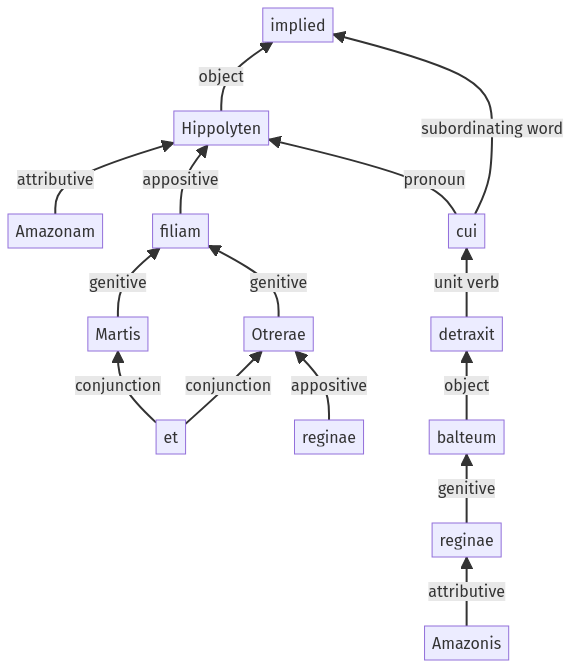

Hyginus, Fabuleer, 30pr.10.1-30pr.10.12a
30pr.9.16-30pr.9.22a | 30pr.10.13-30pr.10.17a
Sentence 427
30pr.10.1-30pr.10.12a
Hippolyten Amazonam, Martis et Otrerae reginae filiam, cui reginae Amazonis balteum detraxit;
1 Hippolyten Amazonam Martis et Otrerae reginae filiam
2 cui reginae Amazonis balteum detraxit
Hippolyten Amazonam, Martis et Otrerae reginae filiam, cui reginae Amazonis balteum detraxit;
Highlighting:
- connecting words
- unit verb
- subject
- object
Color code:
- independent clause (level 1, transitive verb)
- subordinate clause (level 2, transitive verb)
